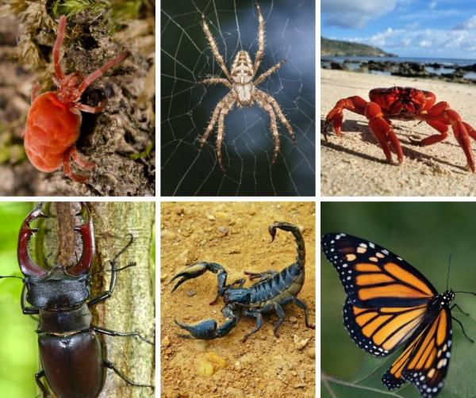

¿QUE SON? |
- ARTROPODOS
- Se conoce como artrópodos a un conjunto evolutivo (o phylum) de animales invertebrados de organización compleja, provistos de un esqueleto externo, cuerpos segmentados y patas articuladas
|
|
Clasificacion de los artropodos |
- ARACNIDOS
- Dotados de quelíceros, carecen de alas y de antenas, y tienen cuatro pares de patas. Su cuerpo se divide en cefalotórax y abdomen
- INSECTOS
- Los más variados y numerosos de todos los artrópodos, presentan un par de antenas, tres pares de patas y dos pares de alas (funcionales o no
- CRUSTACEO
- Son mayormente acuáticos, con presencia en los mares, o también en entornos húmedos terrestres
- MIRIAPODOS
- Provistos de múltiples patas y cuerpos largos, además de mandíbulas (quelíceros), son similares a los insectos en muchas cosas
|

|
CARACTERISTICAS DE LOS ARTROPODOS |
- su cuerpo está segmentado sucesivamente de un modo parecido al de los anélidos.
- poseen secciones bien diferenciadas que suelen respetar el siguiente orden: cabeza, tórax y abdomen,
- se reproducen de manera sexual y suelen estar bien diferenciados sus sexos
- Sus cuerpos están además protegidos de sus rivales o depredadores por un esqueleto articulado y formado por quitina
|

|
EJEMPLOS DE ARTROPODOS |
- ARACNIDOS
- Arañas, escorpiones, garrapatas, ácaroS.
- INSECTOS
- Cucarachas, mantis religiosas, mariposas, polillas, escarabajos, abejas, pulgones, cigarras, pulgas, moscas.
- CRUSTACEOS
- Langostas, cangrejos, camarones, langostinos, percebes.
- MIRIAPODOS
- Ciempiés, milpiés, paurópodos, sínfilos y cochinillas de humedad
|

|